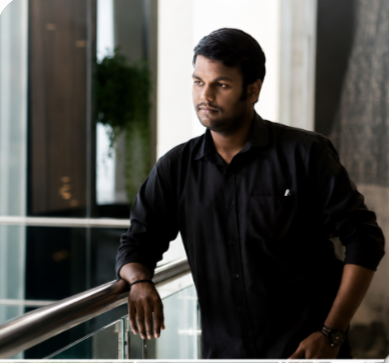

HELLO, I AM
Blending technology, leadership, and innovation.
A blended aspirant with experience in software development, DevOps, cloud deployment and project management.

Projects
Years Experience
Technologies
Dedication
A blended aspirant with hands-on experience in IT projects (WordPress, DevOps, cloud deployment, software development) and Non-IT roles as a Project & Quality Manager, leading teams and managing end-to-end projects. Seeking challenging opportunities in IT or Non-IT to leverage both technical expertise and leadership skills for impactful results.
Visvesvaraya Technological University & South East Asian College of Engineering and Technology
Jan 2024 | CGPA: 8.27
Alvas PU College, Moodbidre
Jan 2019 | 71.83%
R L Jalappa Central School, Kolar
Jan 2017 | 87.40%
Dockerized application, built Jenkins CI/CD pipeline, deployed on Kubernetes.
Deployed application on AWS EC2 Linux server, configured hosting, ensured stable runtime.
Developed backend using Spring Boot, integrated Jenkins CI/CD, managed Git version control.
Built ML model using CNN + Haar Cascade, enabled real-time emotion detection.
To-Do List App, Netflix Clone (github.com/Chethanraj777)
Managed volumetric flask operations, maintained process documentation, coordinated team activities.
Worked with IC Soft ERP, ensured team compliance with operational procedures.
Led teams to complete projects on time, coordinated tasks, optimized workflows.
Analyzed and improved processes, maintained audits and compliance documentation.
StarAgile
Anudip Foundation (Campus Selection)
Tap Academy (Campus Selection)
June 2024 – Present
Nov 2023 – Jan 2024
Email: chethanraj2001kn@gmail.com
Phone: 9741216776
Location: Kolar, Karnataka, India
GitHub: github.com/Chethanraj777